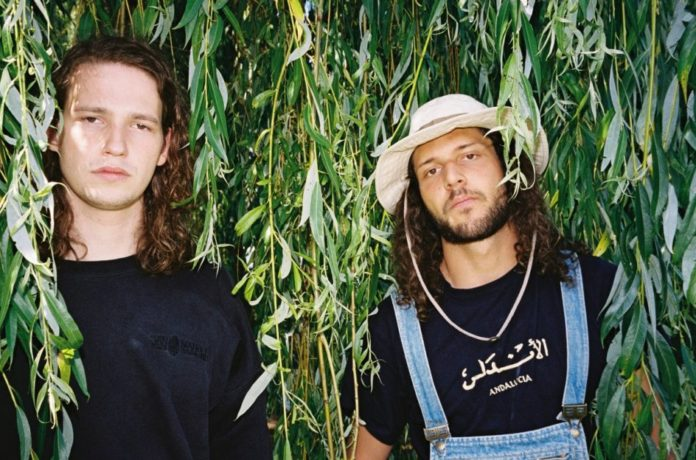
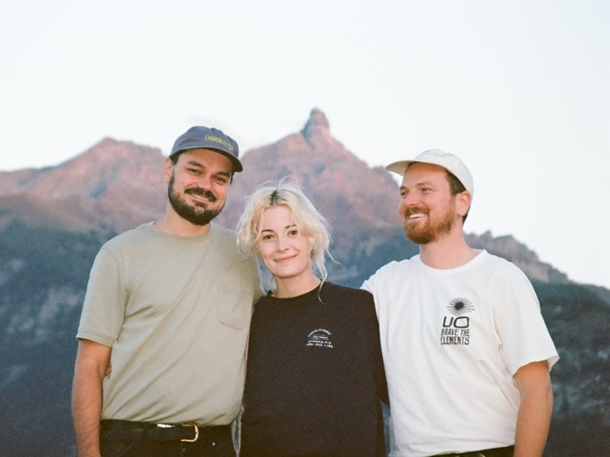
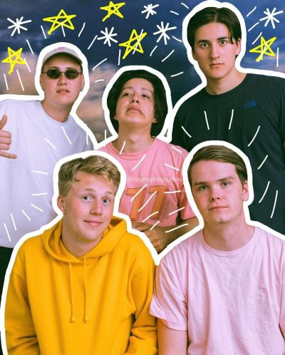
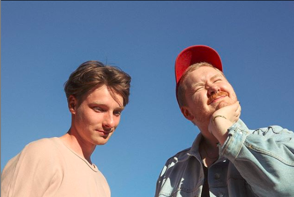
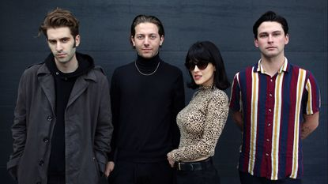

Historia
Feng Suave

Un dueto recientemente formado por Daniel De Jong y
Daniel Leonard Elvis originarios de Ámsterdam, Holanda.
Con menos de 24 años, ambos jóvenes se conocen desde su
adolescencia y mantienen una amistad muy cercana, sus
ideas musicales se empezaron a hacer tangibles después
de un concurso de talentos en el cual concursaron, pero
no ganaron, aunque después de esa experiencia iniciaron
a trabajar juntos.
Este par de holandeses crean paisajes sonoros expansivos
e intoxicantes, suelen tomar prestados fragmentos de
soul y psychodelic rock muy al estilo de los 70; hay una
gran cantidad de influencias flotando a través de la
música de estos músicos, ya sean guitarras psicodélicas,
funk o matices lo-fi, con una vibra bastante fresca y
relajada.
Su EP homónimo es su único material hasta el momento,
sin embargo, el año pasado, las cosas comenzaron a
despegar rápidamente y cada vez se van ganando más
terreno, ya que el público en general los ha recibido su
música. Este dúo suele acompañarse de otros 3 artistas
que ayudan en sus presentaciones en vivo para dar más
forma al show; suelen ser un baterista, un tecladista y
un bajista.
El nombre Feng Suave fue inspirado por un champú
portugués llamado Ultra Suave, pensado por su
sintetizador y director de arte Joris, como un juego de
palabras mezclándolo con Feng Shui.
Discografía
|
Sencillos / EPs
|
|
Feng Suave (2017)
|
|
Warping Youth (2020)
|
Men I Trust

Men I Trust es una banda canadiense de electro-pop indie de
Montreal, Quebec, Canadá.
Men I Trust es una banda con sede en Montreal fundada en
2014 por los amigos de secundaria Jessy y Dragos que se
reunieron en el departamento de música de la Université
Laval . Más tarde se les unió Emma, una cantante y
guitarrista. Lanzaron un EP homónimo en 2014 y más tarde
actuaron en el Montreal Jazz Festival, Quebec City Summer
Festival, y M for Montreal. Lanzaron el álbum Headroom en
2015. La banda realizó una gira en China , tocando en
Shenzhen , Beijing y Shanghai . En 2017, Men I Trust lanzó
el single " I Hope To Be Around " con un video musical que
lo acompaña. En 2018, lanzaron el single "Show Me How" junto
con un video musical autodirigido. En 2018, se embarcaron en
una gira por Norteamérica.
Discografía
|
Álbumes
|
Sencillos
|
| Men I Trust (2014) |
Humming Man (2016) |
| Headroom (2015) |
Lauren (2016) |
| Oncle Jazz (2019) |
Plain View (2016) |
|
Forever Live Sessions (2020)
|
You Deserve This (2017)
|
|
Tailwhip (2017) |
|
I Hope To Be Around (2017)
|
|
Show Me How (2018) |
|
Seven (2018) |
|
Say Can You Hear (2018)
|
|
Numb (2019) |
|
Norton Commander (All We Need) (2019)
|
|
Lucky Sue (2020) |
|
Tides (2021) |
boy pablo

Nicolás Muñoz, hijo de padres chilenos, nació en Bergen,
Noruega. Estudió la secundaria en la escuela privada de
música Kongshaug Musikkgymnas, localizada en las cercanías
de la ciudad de Os. Fundó el proyecto "Boy Pablo" en
diciembre de 2015, llamando la atención en el 2016,
recibiendo una beca Bergenfest.
La banda adquirió gran notoriedad en el 2017 gracias a la
canción y el videoclip "Everytime". El video, subido a
YouTube en mayo de 2017, generó miles de visitas, en parte
gracias a un hilo en Reddit, para luego aumentar a millones
al ser recomendado por los nuevos algoritmos de YouTube, en
octubre de 2017.
Boy Pablo lanzó el EP de 6 canciones Roy Pablo en mayo de
2017, que incluye la canción "Everytime". En marzo de 2018
lanzó el sencillo "Losing You". Por esa misma fecha dieron
sus primeros conciertos fuera de Noruega, en una gira por
Europa. Aunque Muñoz graba y produce su música solo, en sus
presentaciones en vivo incluye a sus antiguos compañeros de
clase: Gabriel en la guitarra, Henrik en el bajo, Eric en
los teclados y Sigmund en la batería.
Su estilo musical ha sido comparado con el de Mac DeMarco.
Además de DeMarco, ha citado como influencias a Veronica
Maggio, Tyler, The Creator, y la música chilena de los años
70 que su padre le hizo escuchar.
En octubre de 2020, lanza su álbum debut: "Wachito Rico",
que incluye los sencillos "hey girl", "honey", "rest up" y
"leave me alone!" que había lanzado meses anteriores de la
publicación del álbum. "Wachito Rico" es un álbum
conceptual, que narra la historia de Wachito (interpretado
por Nicolas Pablo) en una experiencia amorosa, en la que
atraviesa las diferentes etapas de una relación. Esta
narrativa, se lleva a cabo en los vídeos musicales de los
sencillos del álbum.
Discografía
|
Álbumes de estudio
|
EPs |
Sencillos
|
|
Wachito Rico (2020)
|
Roy Pablo (2017) |
Flowers (2016) |
|
Soy Pablo (2018) |
Beach House Interlude (2016)
|
|
|
Everytime (2017) |
|
|
Losing You (2018) |
|
|
Sick Feeling (2018)
|
|
|
Never Cared (2019) |
|
|
hey girl (2020) |
|
|
honey (2020) |
|
|
rest up (2020) |
|
|
leave me alone! (2020)
|
Her's

Se formó en 2015 y lanzaron su canción debut, «Dorothy», el
7 de abril de 2016. Actuaron en el Green Man Festival Rising
Stage en 2016. Una compilación de nueve canciones titulada
Songs of Her's fue lanzada el 12 de mayo de 2017. La
compilación recibió cuatro estrellas de la revista musical
The Skinny. Escribiendo para NME en abril de 2017, Thomas
Smith dijo:
Her's no es un grupo para quedarse quieto. Cada canción que
producen, desde la potencia pop de habitación de baja
fidelidad de la canción de debut de 'Dorothy', hasta la
igualmente melódica versión de rock gandul del dúo en
'Marcel', ve al dúo en Liverpool cambiar y flotar entre
sonidos. Nunca realmente encajando en un solo género, sino
que de alguna manera acertando en lo que terminen haciendo.
La banda lanzó más tarde su primer álbum de larga duración,
Invitation to Her's, en Heist o Hit Records6 el 24 de
agosto de 2018. Her's aparecieron en la lista de Paste
titulada «Las 15 nuevas bandas de Liverpool que debes saber
en 2018». Una presentación acústica de la banda en el
festival South by Southwest en 2019 en Austin, Texas,
también se presentó en BBC Music Introducing.
Her's consistía en Stephen Fitzpatrick, en voz y guitarra, y
Audun Laading, en bajo y voz de respaldo. Fitzpatrick, de
Barrow-in-Furness, Cumbria, Inglaterra, y Laading, de
Flekkerøy, Kristiansand, Noruega, se conocieron en el
Instituto de Artes Escénicas de Liverpool, del cual ambos se
graduaron en 2016 después de tres años de licenciatura en
música.
Fitzpatrick y Laading tocaron previamente en la sección
rítmica de la banda de Brad Stank, Sundogs. El dúo
inicialmente formó Her's en broma, viajando por Liverpool
para filmar videos musicales cómicos y publicarlos en
YouTube.
Fitzpatrick también era baterista, pero la banda usó una
caja de ritmos con ambos miembros contribuyendo a su
programación.
Discografía
|
Álbumes
|
Sencillos
|
|
Songs of Her's (álbum compilatorio, 2017)
|
Dorothy/What Once Was (2016)
|
|
Invitation to Her's (álbum de estudio, 2018)
|
Marcel (2016) |
|
Speed Racer (2017) |
|
I'll Try (2017) |
|
Loving You (canción de Minnie Riperton) (2017)
|
|
Love on the Line (Call Now) (2018)
|
|
Low Beam (2018) |
|
Harvey (2018) |
|
Under Wraps (2018) |
The Marías

María Zardoya es una talentosa compositora y cantante nacida
en Puerto Rico y criada en Atlanta desde niña; desde
temprana edad escribía poemas y canciones, ella siempre
encontró una particular afición por la música.
Posteriormente por recomendación de una amiga cercana,
decide irse a Los Angeles, en donde conoció a Josh Conway,
el ingeniero de sonido que estaba a cargo del lugar donde
ella ofreció un concierto una noche. Él le propuso hacer una
colaboración entre ambos, y durante el proceso terminaron
enamorándose, así nació la banda alrededor del 2016, que por
varios meses no tuvo nombre.
Si bien The Marías encuentra su esencia en su frontwoman
María, la banda se conforma de cuatro figuras masculinas
más, que acompañan el proyecto musicalmente, y contribuyen
en sus presentaciones también.
Conway invito a buenos amigos al grupo para llenar los
espacios, y fue entre todos que decidieron que The Marías
sería el nombre para la banda; la fusión cultural va más
allá de la esencia latina que aporta la cantante y la música
influenciada por los músicos estadounidenses, incluye ideas
de todos los músicos lo cual nutre el proyecto con
diferentes géneros, tales como romantic pop, funk, dream
pop, new soul; todo esto entre líricas tanto en español como
en inglés, añadiendo un sutil toque de psicodelia musical en
sus tracks.
La actual revolución de artistas hispanohablantes comienza a
extenderse a otros ámbitos musicales no necesariamente
mainstream, por ejemplo, al dream pop o a el soul
psicodélico, que es como los propios The Marías autodefinen
su música.
Discografía
|
Álbumes
|
Sencillos
|
|
Superclean, Vol. I (2017)
|
I Don't Know You (2017)
|
|
Superclean, Vol. II (2018)
|
Déjate Llevar (2017)
|
|
Cariño (2018)
|
|
Clueless (2018) |
|
Drip (2018) |
|
...baby one more time (2019)
|
|
Out for the Night (2019)
|
|
Hold It Together (2020)
|
|
Jupiter (2020) |
|
Care For You (2020)
|
|
bop it up! (2020) |
|
We're The Lucky Ones (2020)
|